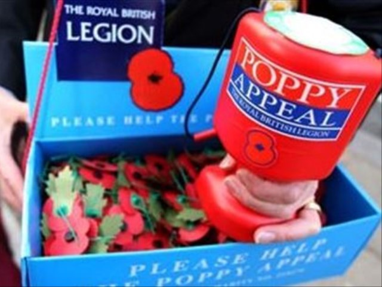

Remembrance ceremonies in Paris and across France, organised by the Royal British Legion since 1921.
Two yearly events.
The Poppy Appeal is the Royal British Legion's annual appeal, in the period leading up to 11 November, Armistice Day. Poppies are worn in remembrance, and the appeal raises funds to support the Armed Forces community.
In France, you can install a Poppy Box in your favourite bar or restaurant, get poppies for distribution, become a volunteer poppy seller, or order poppy wreaths for memorial events. Unfortunately, the official website https://www.poppyshop.org.uk/ does not deliver to Europe, but contact janetwarby@yahoo.com for information.

Poppy boxes, distribution and wreaths for memorial events.
Email janetwarby@yahoo.com for more information.
In 1924 one of two important events which took place was the unveiling by HRH the Prince of Wales of the British Commonwealth Memorial Plaque in Notre Dame Cathedral. He was accompanied by his brother Prince Henry, later the Duke of Gloucester, and the ceremony was conducted in the presence of the President of the French Republic, Monsieur Gaston Doumergues, and Marshal Foch.
This started a tradition: from 1924 onwards, apart from the war years, there has been an Annual Service of Remembrance on 11 November, which is a national holiday in France. This ceremony is organised by the Royal British Legion, with the generous assistance of the British Embassy Defence Section. A wreath of poppies is laid either at the foot of the altar steps by the British Ambassador together with the Dean of the Commonwealth.
The service is open to British and Commonwealth nationals and anyone else who wishes to take part. It is a most impressive ceremony and the Cathedral of Notre-Dame is always full. The service is conducted by the Chaplain of the Paris Branch, supported by all the clergy from the English-speaking communities in the Paris area. It is essentially ecumenical and the address of welcome is always given by a senior clerical member of the Cathedral. The British Army supplies a bugler and a piper, who wear full dress, two British Metropolitan Policemen participate in uniform, and most of the French Old Comrades Associations parade their banners, as do associations of the Commonwealth countries and the United States of America.
In 1989 HRH the Prince of Wales, at the conclusion of a State visit to France, attended the service accompanied by HRH the Princess of Wales. He read the lesson and, supported by the British Ambassador, laid the wreath.
A landmark in 1924 was the rekindling of the flame at the Tomb of the Unknown Soldier at the Arc de Triomphe. The Unknown Soldier was interred in 1921 — read the full story ›. and the ceremony of the rekindling of the flame commenced in 1923, and apart from the war years has continued ever since. It takes place every day of the year at 6.30 pm.
1924 is important for the Paris Branch because it was in that year that we were invited to be present, and to nominate someone to rekindle the flame on 4 August, the date Britain and her dominions declared war on Germany in 1914. This ceremony, apart from the war years, has continued ever since and is one of the highlights of the Royal British Legion's year. It is an impressive and moving ceremony.
Further remembrance pages from the Legion in France.
 British pies & bangers
British pies & bangers English for learners
English for learners